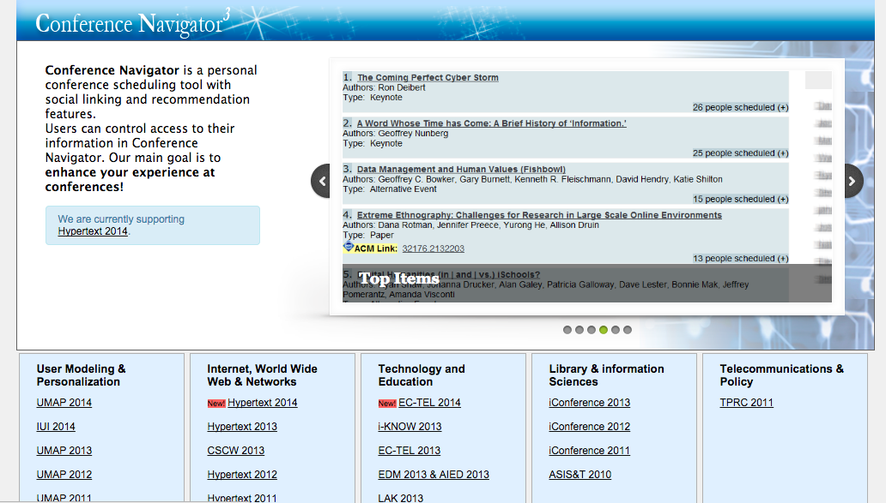

Conference Navigator 3
Background
Conference Navigator is a personal conference scheduling tool with social linking and recommendation features. Users can control access to their information in Conference Navigator. Our main goal is to enhance users' experience at conferences.Clike here to check the website.

Current Work
Our current work aims at adding community information to make it easier for users to browse conferences' community information. Users can easily compare the information between different conferences in one community, including authors information, attendees information, users' connections, recommendations and etc. The new version of Conference Navigator will be displayed in a more user-friendly way and help users to obtain information. For example, users can get the authors of the whole community.